Tecnología que actúa donde otros fallan
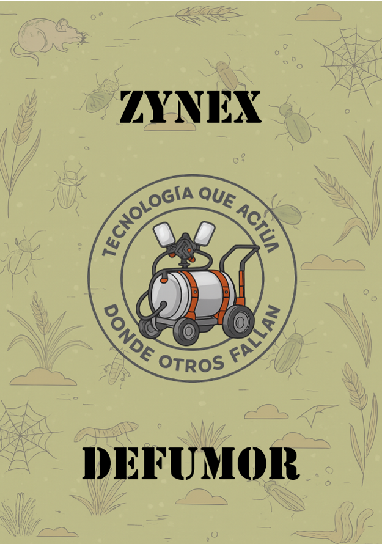
Resumen: Se realizó una encuesta a 60 agricultores de la parroquia Huachi Grande para analizar la necesidad de automatizar la fumigación.
Encuesta directa con preguntas cerradas.
| Pregunta | Resultado |
|---|---|
| Demanda tiempo | 90% |
| Uso de tecnología | 88% |
| Fumigación manual | 81% |
| Automatización | 70% |
| Compra robot | 66% |
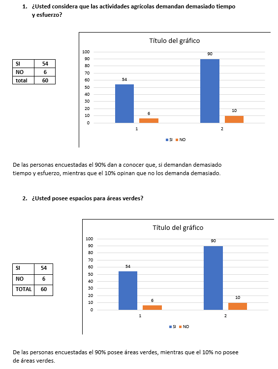
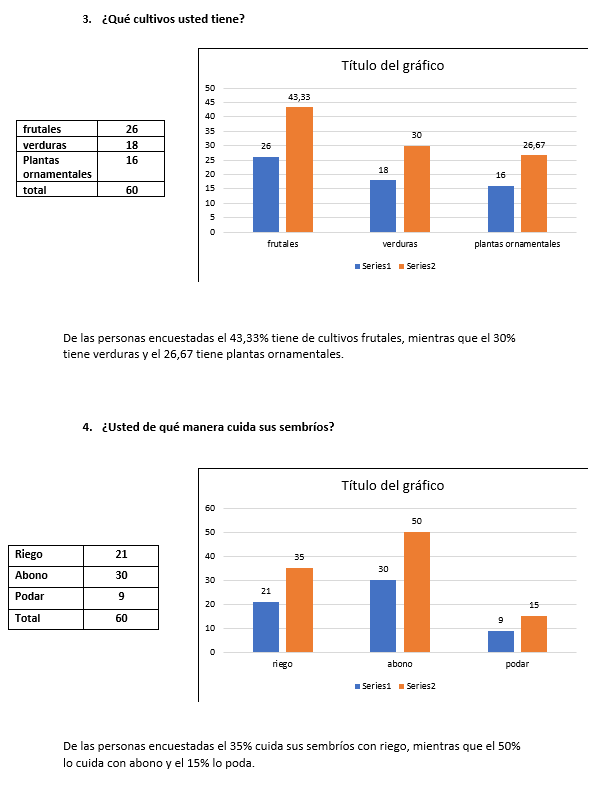
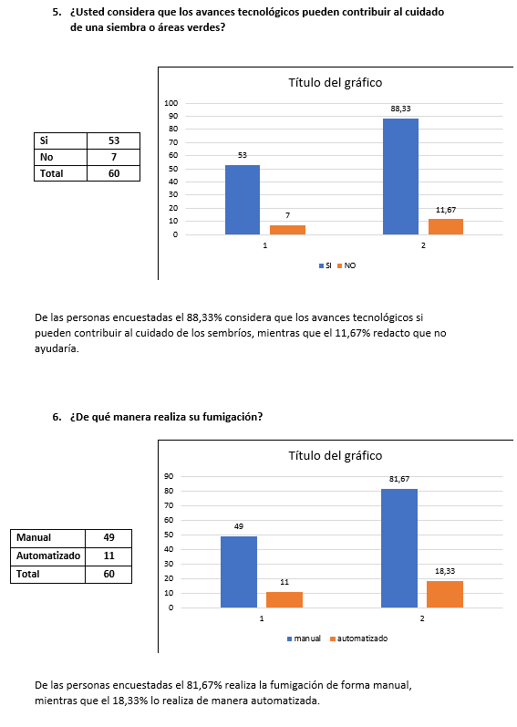
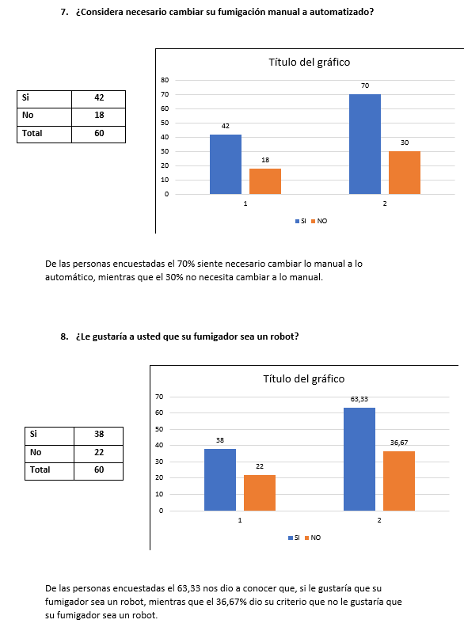
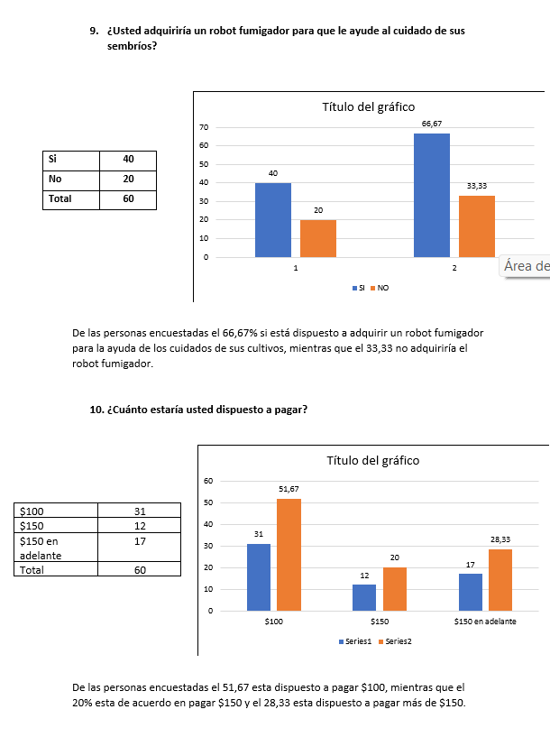
La fumigación manual continúa siendo una de las tareas más riesgosas dentro del sector agrícola. Muchos trabajadores están expuestos diariamente a pesticidas que pueden causar problemas respiratorios, irritación de la piel, daños neurológicos e incluso enfermedades graves por exposición prolongada.
Razón social
Logotipo
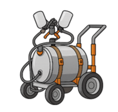
Eslogan
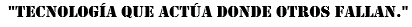
Marca del producto
Diseñar y construir un robot fumigador automatizado que permita aplicar productos químicos de forma segura, eficiente y uniforme en cultivos.
Mejorar la calidad de vida agrícola mediante tecnología segura.
Ser líderes en innovación agrícola.
Respeto, responsabilidad, honestidad, puntualidad
El robot DEFUMOR automatiza la fumigacion agricola mediante tecnología moderna, permitiendo reducir el contacto directo del agricultor con químicos peligrosos, optimizar el uso de recursos y mejorar la productividad del cultivo.
ZYNEX contribuye reduciendo el uso excesivo de agroquímicos y protegiendo la salud del agricultor, disminuyendo la contaminación ambiental y promoviendo prácticas agrícolas sostenibles.
El producto está dirigido a agricultores que buscan optimizar tiempo, reducir esfuerzo físico y mejorar la eficiencia en sus cultivos mediante el uso de tecnología.
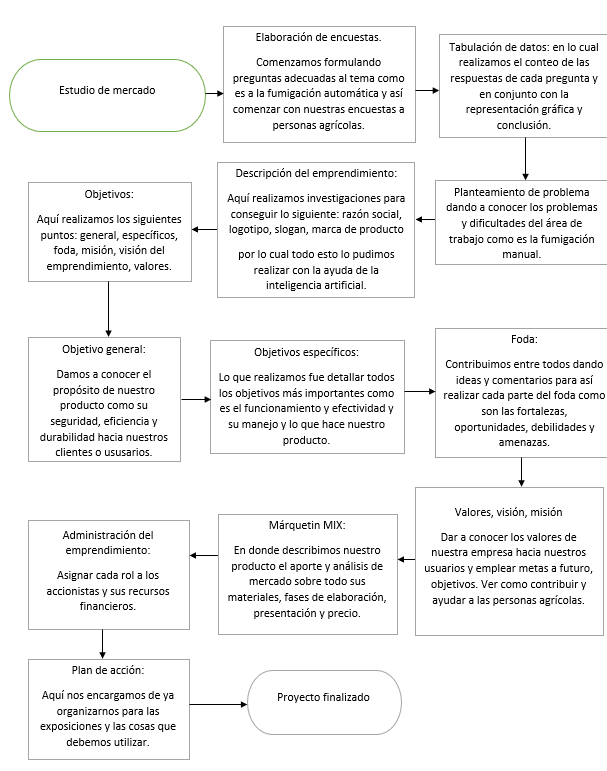
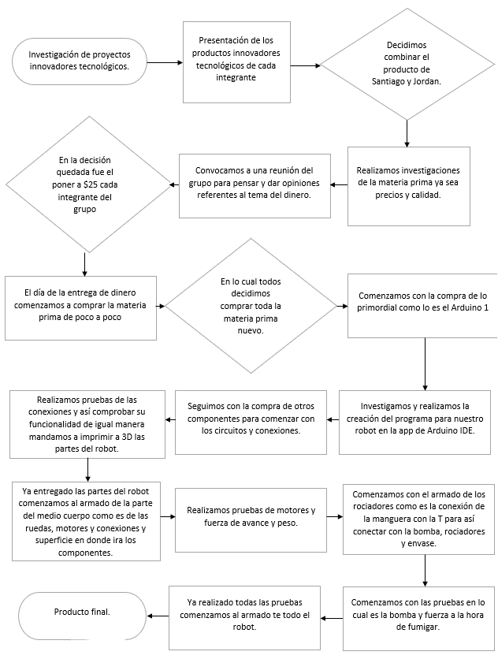
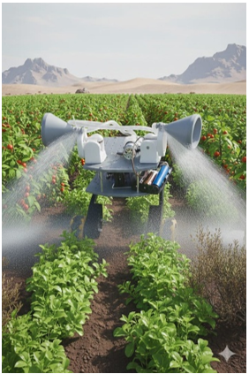
Precio del producto:
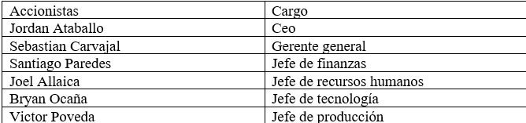
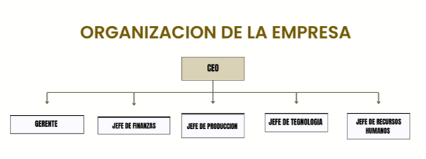
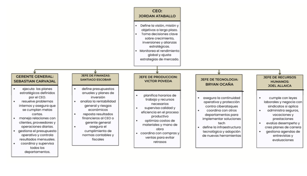
Desarrollar, ensamblar, probar y presentar el robot fumigador en una feria tecnológica, asegurando su correcto funcionamiento y demostración práctica.
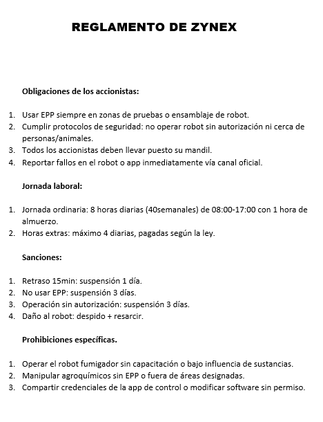
| Material | Cantidad | Total |
|---|---|---|
| Arduino Uno | 1 | $15 |
| Motores reductores | 4 | $40 |
| Ruedas | 4 | $20 |
| Servo MG90 | 2 | $10 |
| Bomba 12V | 1 | $12 |
| Baterías 18650 | 5 | $25 |
| Portapilas | 1 | $6 |
| Relay | 1 | $5 |
| Puente H | 1 | $6 |
| Protoboard | 1 | $8 |
| Cables | 1 | $6 |
| Mangueras | 2 | $4 |
| Conectores | 1 | $5 |
| Impresión 3D | 1 | $30 |
| Recipiente | 1 | $10 |
| Otros cables | 1 | $10 |
| Total | $222.05 |